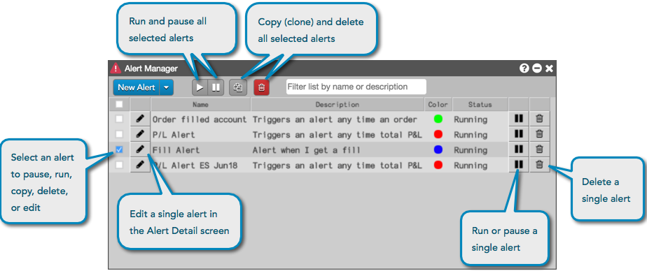
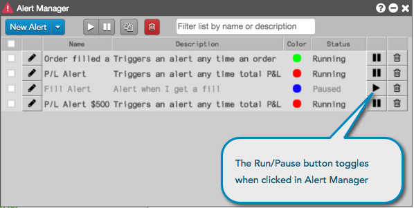
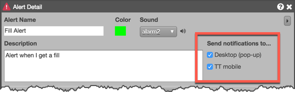
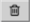

to open the Alert Detail screen. In the Send notifications to: section of this screen, uncheck either Desktop (pop up) to disable sending pop-up alert notifications to the desktop, or TT Mobile to disable sending push notifications to TT Mobile.
to open the Alert Detail screen. In the Send notifications to: section of this screen, uncheck either Desktop (pop up) to disable sending pop-up alert notifications to the desktop, or TT Mobile to disable sending push notifications to TT Mobile.Using the Alert Manager, you can run or pause one or more alerts. You can also edit, copy, and delete each alert that you create, as well as search/filter alerts by using the filter list text box.

You can run or pause an alert from either the Alert Manager, alert notification, or Alert Manager in TT® Mobile. To enable or disable one or more alerts in the Alert Manager on your "desktop", use the (Run/Pause) button at the top of the widget.
Individual alerts can be paused or run from the Alert Manager, or paused directly from the alert notification. In the Alerts Manager widget, select an alert and can click to pause it. When an alert is paused, it will not be triggered and appear in the Alerts Viewer. If enabled, pop-up notifications to the desktop and push notifications to TT Mobile are also paused. The Status column shows "Paused" when the alert is inactive.
To resume sending the alert, click . When you resume running an alert, it can be triggered and appear in the Alerts Viewer. Pop-up notifications to the desktop and push notifications to TT Mobile also resume running if they are enabled. The Status column shows "Running" when the alert is active.

Note: If an alert has been paused in the TT Mobile Alert Manager, the change in alert status is displayed in the Status column in the Alerts Manager on your desktop.
To enable or disable sending notifications, select an alert in the Alert Manager and click to open the Alert Detail screen. In the Send notifications to: section of this screen, uncheck either Desktop (pop up) to disable sending pop-up alert notifications to the desktop, or TT Mobile to disable sending push notifications to TT Mobile.

For more details about the Alert Detail screen, refer to Creating an alert.
To copy (clone) one or more alerts, select the alert(s) in the viewer and click . Each alert appears in the Alert Manager as a copy and can be edited to create a new alert.
To edit an alert, select the alert in the Alert Manager and click . In the Alert Detail screen that appears, modify the alert and save your changes.
For more details about the Alert Detail screen, refer to Creating an alert.
To delete one or more alerts, select the alert(s) in the Alert Manager and click . To delete a single alert, select the alert and click .